Projets personels
DA + Pédagogie (contenu & format) + Animation + Atelier prototypage

"Dissémination de jouets hybrido-interactifs pour
manifestations festives"
Collectif pluri-diciplinaire. Installations vidéo, musicales et plastiques pour
l'univers des soirées.